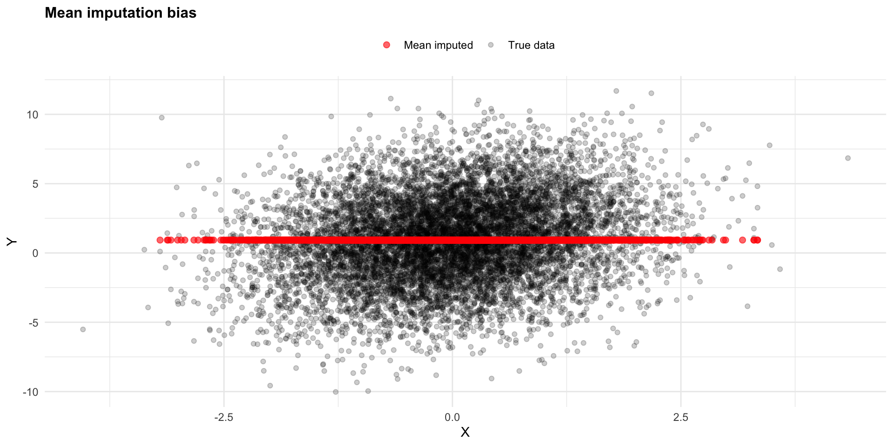
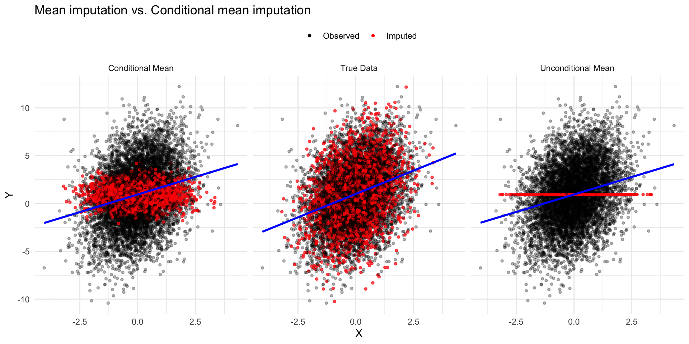
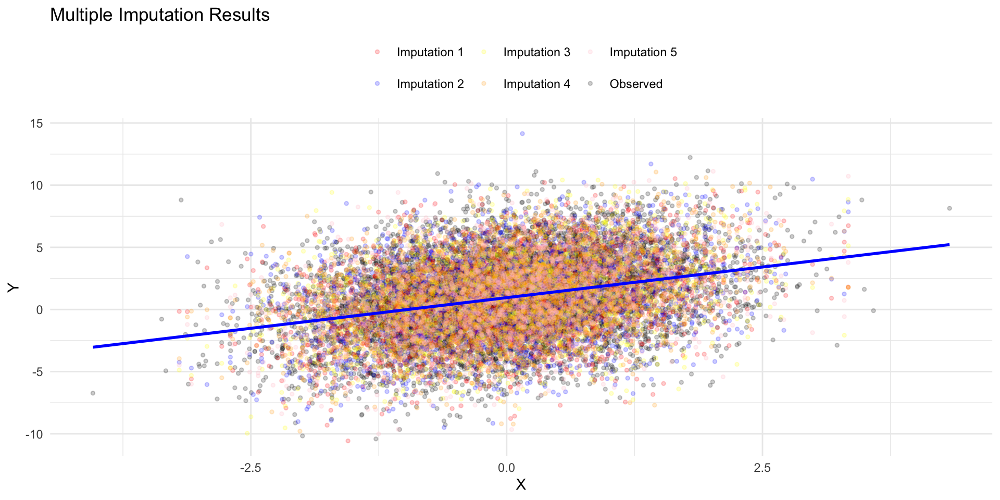
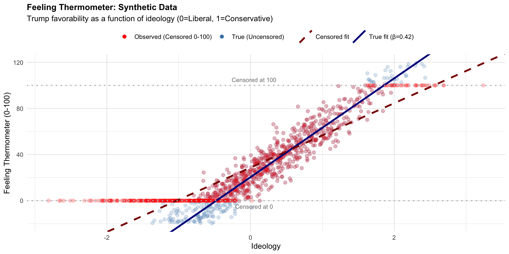
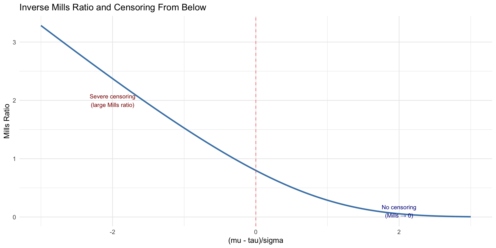

Missing Data, Censoring and Truncation
2026-08-18
Censoring and Truncation
- Truncation means the data itself are fundamentally changed by the truncation process.
- We simply do not have data at particular levels of the dependent or independent variables
- Censoring does not alter the composition of data, truncation does
Trunctation \[
y_{observed} = {
\begin{array}{lr}
NA, y_{latent}\leq\tau\\
y_{latent}, y_{latent}>\tau\\
\end{array}
}
\]
Censoring \[
y_{observed} = {
\begin{array}{lr}
\tau, y_{latent}\leq\tau\\
y_{latent}, y_{latent}>\tau\\
\end{array}
}
\]
Censoring and Truncation
- Censoring and truncation are examples of non-ignorable missing data processes
- The probability of being censored or truncated depends on the value of the variable itself
- We would say these data are missing not at random (MNAR)
- We need to explicitly model the missing data process to get valid estimates
- Let’s look at missing data processes more generally, with an eye towards ignorability
Ignorability
- The most common approach to deal with missing data is listwise deletion, where one only examines cases with complete data
- This is only advisable if data are missing completely at random (MCAR)
- Always need to consider the data generating process. Is the missing data process systematically related to observed or unobserved values?
- Assume we had the full data, with no missing values, and let’s call this \(y_{complete}\)
- The complete data consists of a vector of observed and what would be observed if the data weren’t missing, \(y_{observed}\) and \(y_{missing}\)
- Let’s assume that we then create an indicator, coded 1 if the data are indeed missing and 0 if observed. Now, \(I \in (0,1)\)
Ignorability
- It’s useful simulate (non)ignorable processes to understand missing data mechanisms
- Here’s the idea:
- Generate a complete dataset with no missing values
- Generate a missingness indicator – 1/0 – based on some process (e.g., random draw)
- Apply the indicator to the complete dataset to create missing observations
- Examine what happens when data are ignored, imputed, and so forth
Missing Completely at Random (MCAR)
- There are three types of missing data processes: Missing Completely at Random (MCAR), Missing at Random (MAR), and Missing Not at Random (MNAR)
- Missing Completely At Random (MCAR) means the probability of missingness is unrelated to variables in the data
\[p(I|x,y,\phi)=p(I|\phi)\]
- Missingness does not depend systematically on the data — whether observed values, not unobserved values, nor demographics. It’s completely random governed by parameter \(\phi\)
MCAR
| 1 |
3 |
4 |
? |
| 2 |
5 |
5 |
5 |
| 3 |
2 |
3 |
3 |
| 4 |
4 |
3 |
? |
Examples
MCAR
- Technology: Wave 3 data are randomly lost for 10% of sample due to a server collapse
- Random sampling: You randomly exclude 15% of respondents to test survey efficiency, a random sample of the data.
- Hardware failure: A desktop randomly breaks during wave 3 interviews for some respondents and you lose responses
Not MCAR
Person 1 is missing because they’re younger. This is not MCAR, because missingness depends on age, which can be found in the data.
Person 1 is missing because their Y value is high (truncation based on Y value)
Person 1 skipped wave 3 because they realized they have a really high value of \(y\) and are embarrassed about it, so they refuse to respond
Missing at Random (MAR)
- Data are missing at random (MAR), if the data tell us something about missingness
\[p(I|x,y,\phi)=p(I|x,y_{observed},\phi)\]
This is is the probability that data is missing, given predictors x and all data y (both observed and missing), and parameters \(\phi\) that generate the missing data.
The missing data process depends on \(x\) and \(y_{observed}\) and not what \(y\) would have been if it were observed!
Missing at Random (MAR)
- Let’s take an example using a three wave panel where some data are missing at wave 3
- If data are MAR, \(y\) at time 3 depends on \(y\) at t1 and t2 (observed), not on what \(y_{t3}\) would have been.
\[p(I_{t3}|y_{t1},y_{t2},y_{t3})=p(I_{t3}|y_{t1},y_{t2})\]
Reasonable Assumption: Person 1 skipped wave 3 because an extremely partisan political leader expressed skepticism about \(y\)
Unreasonable Assumption: Person 1 skipped wave 3 because they realized they have a really high value of \(y\) and are embarrassed about it, so refuse to respond
Missing at Random (MAR)
\[p(I_{t3}|y_{t1},y_{t2},y_{t3}) \neq p(I_{t3}|y_{t1},y_{t2})\]
The probability of being missing at time depends on the unobserved value of \(y_{t3}\) itself, regardless of what you observe.
You cannot make this disappear by conditioning on observed variables.
Missing Not at Random (MNAR)
\[p(I_{t3}|y_{t1},y_{t2},y_{t3}) \neq p(I_{t3}|y_{t1},y_{t2})\]
Example 1: Social desirability bias - Person 1 has high authoritarianism at t3 but refuses to answer because they’re taking the survey in an environment where that is perceived to be socially unacceptable - they answered t1, t2, but there actual score at t3 is high, yet it’s not observed. Missingness depends on the unobserved y at t3 value and there is nothing in the data that helps us know these values
Example 2: Attrition - People whose efficacy declined significantly between t2 and t3 are more likely to drop out (they’ve become discouraged by all things politically). You only observe t1, t2 (stable), but \(y\) at t3 is missing and is driven by the change itself, not the actual score
Solutions
- The natural inclination may be to ignore the missing data and run the analysis on observed data.
- This is called full case analysis or complete case analysis (Gelman and Hill 2009).
- This is equivalent to listwise deletion of missing cases.
- It will yield correct but inefficient parameter estimates if data are MCAR
- It will yeild biased parameter estimates if data are MAR or MNAR
- Key Question: Assume the missing data are not missing, they are complete, would your estimates be different?
Methods that Retain all Data
- The logic of imputation: Make an informed guess about what the missing data values might be and fill in the blanks.
- This is a valid approach if data are MAR (Rubin 1976).
- It is not a valid approach if the data are MNAR, unless you model the missing data process directly, such as in a censored or truncated regression (Heckman 1979).
- Methods available:
- Single imputation (mean, conditional imputation, hot-deck)
- Multiple imputation (MI)
- Full information maximum likelihood (FIML)
- Expectation-Maximization (EM) algorithm
- Bayesian methods
Simulating Missing Data Processes
- Mean imputation: Replace missing values with the mean of observed values
Simulation Setup
- Generate a full, complete dataset with no missing values
- Create an indicator, I, for missing data
- Impute the mean value for all data with an I
- Compare the true data to the imputed data
Simulating Missing Data Processes
Statistic True Observed Mean_Imputed
1 Mean 0.9945377 0.9297224 0.9297224
2 Variance 9.6047253 9.3531419 6.0146717
3 Correlation with X 0.2201510 0.2207849 0.1774735

Missing Data Processes
- The covariance between x and y is biased downward with mean imputation
The covariance between x and the true y is:
The covariance between x and the imputed y is:
Why does this happen? If the variance of the OLS estimator is, \[var(y|x)=\sigma^2=E[(y|x-E(y|x))^2]\]
\(E(y|x)\) does not equal \(E(y)\) across levels of \(x\)
And for the same reason, the estimate of the covariance will be wrong, because our expected value of \(y\) is really not \(\bar{y}\) across values of \(x\)
Hot Deck Imputation
- While mean imputation is easy to implement, it has drawbacks if the missing data process is related to \(x\)
- It does not account for a proper level of uncertainty about the missing value because it does not model \(E(y|x)\)
- Hot Deck Imputation. Find similar cases and impute based on these values
- Example: Say we have public opinion data and a missing observation for a mother who is 35 with 2 children and lives in Alabama. In the data, find a mother who is approximately 35 with 2 children also living in Alabama and then fill in the missing value with this observed value
Conditional Imputation
- Conditional Imputation: Regress \(y\) on \(x\) and use the predicted value to fill in the missing data. This is better than mean imputation because it accounts for the relationship between \(x\) and \(y\).
- Both conditional imputation and hot deck imputation account for the relationship between \(x\) and \(y\), but they still underestimate the uncertainty about the missing value because they do not add any error term to the imputed value.
- Typically our data are treated as random samples from a population, but the imputed values are known with certainty?
Conditional Imputation
Statistic True_Data Unconditional_Mean Conditional_Mean
1 Mean 0.9911449 0.9382839 0.9357726
2 Variance 10.1077128 7.4057851 7.6609977
3 Correlation with X 0.3095438 0.2703136 0.2676700
4 Slope Coefficient 0.9781205 0.7311344 0.7363532
Missing Data Processes

Multiple Imputation
- Single point methods rely on deterministic imputation, meaning that we fill in missing values with a single predicted value, without accounting for uncertainty.
- Multiple Imputation: The logic of multiple imputation is that we use this error to condition uncertainty about our predicted values.
- Estimate the regression model on the observed data. Save the estimates and the variance of the errors.
- Draw \(m\) values from a multivariate normal distribution based on the model estimates and the variance from (1)
- Save the full data set of observed and imputed data in (2). Call this data set \(m_i\). In total, you will have \(m\) unique data sets.
- Estimate your statistical model on the \(m\) unique datasets.
- Combine the results by averaging the estimates.
- The
R package mice automates this process.
Multiple Imputation

Multiple Imputation
| Mean |
0.99 |
0.94 |
0.94 |
0.94 |
| Variance |
10.11 |
7.41 |
7.66 |
8.11 |
| Correlation with X |
0.31 |
0.27 |
0.27 |
0.35 |
| Regression Slope (X) |
0.98 |
0.73 |
0.74 |
0.99 |
The EM Algorithm
- Recall the complete data are \(y_{complete} = (y_{observed},
y_{miss})\)
- The likelihood for the complete data is \(L(\theta|y_{complete})\)
- The EM algorithm repeatedly iterates between two steps:
- E-step (Expectation): Calculate the expected value of the complete-data log-likelihood under the
conditional distribution of the missing data: \[Q(\theta|\theta_t) = E[\log L(\theta; Y_{obs}, Y_{miss}) | Y_{obs}, \theta_t]\] “Given what we observe and our current parameter guesses, what are likely values of the missing data?”
The EM Algorithm
- M-step: Update parameters by maximizing the expected log-likelihood from the E-step: \[\theta_{t+1} = \arg\max_\theta Q(\theta|\theta_t)\] “Given the complete data (observed + imputed), what parameters fit best?”
- Repeat E-step and M-step until convergence – i.e., parameters change by a negligible amount
- Simple Example: \(y = [4, 5, ?, 6, 3, 5, 4]\)
- Initial parameter estimates: \(\mu_0 = 4.5\), \(\sigma_0 = 1\)
The EM Algorithm
E-step: Estimate missing values using current parameters – i.e., fill in the blank value. \[E[Y_{miss} | Y_{obs}, \theta_t]\]
M-step: Estimate the parameters on the complete data (observed + imputed) \[\theta_{t+1} = \arg\max_\theta Q(\theta|\theta_t)\]
Repeat Given the parameter estimates from the M-step, return to the E-step and re-estimate the missing values. Maximize again in the M-step. Continue until convergence.
Bayesian Estimation
- See McElreath, Chapter 14
- Bayesian methods treat missing data as additional parameters to be estimated
- Assume a regression model with missing data in the independent variable
- \(x\) is missing for some observations
- In the specification, the regression is latent where \(x^*\) is drawn from a distribution, based on the priors. The likelihood is just a linear regression for observed cases, but we’re not ignoring missing data – we’re estimating them as part of the model
Bayesian Estimation
\[
\begin{align}
y_i &\sim \text{Normal}(\mu_i, \sigma^2) \\
\mu_i &= \alpha + \beta x_i^* \\
x_i^* &\sim \text{Normal}(v, \sigma_x^2) \\
\alpha &\sim \text{Normal}(0, 10) \\
\beta &\sim \text{Normal}(0, 10) \\
v &\sim \text{Normal}(0, 10) \\
\sigma, \sigma_x &\sim \text{Half Normal}(0, 1)
\end{align}
\]
When Missingness is Nonignorable
- Censoring and Truncation are non-ignorable missing data processes
- Truncation means the data itself are fundamentally changed by the truncation process
- Censoring involves missing data for a variable, but complete data for the covariates
- Often, scores are censored at a particular value, usually the min and/or max of a scale
Censoring and Truncation
- For instance, say we observe any value of the dependent variable if the dependent variable is less than \(\tau\)
\[y_{observed} = \{
\begin{array}{lr}
NA, y_{latent}\leq\tau\\
y_{latent}, y_{latent}>\tau\\
\end{array}\]
Truncation
- Assume a simple linear model where \(y\) depends on \(x\), and the slope is 0.25
- Simulate data where we systematically truncate \(y\) at different levels
- In particular, from -3 to 3 in increments of 0.1
- Values greater than the truncation level will be removed from the data. They are not observed
- This is truncation from above, a ceiling, where values greater than \(t\) are removed from the data set.
- Depending on the severity of the truncation, this can lead to substantial bias in estimates of the parameters
Censoring
- Assume a simple linear model where \(y\) depends on \(x\), and the slope is 0.25
- We will simulate data where we systematically censor \(y\) at different levels
- We’ll censor from -3 to 3 in increments of 0.1
- Values less than the censoring level will be set to the censoring level.
- This is censoring from below, a floor, where values less than \(c\) are scored at \(c\)
An Example: Feeling Thermometers and Censoring
- Feeling thermometer scores are often censored at 0 and 100
- These values represent a floor and a ceiling
- Respondents may want to express a more negative or positive sentiment, but they are constrained by the scale
- This creates a non-ignorable missing data problem
- If we ignore the censoring, our estimates will be biased
- Let’s see
An Example: Feeling Thermometers and Censoring
- Assume feelings towards Trump are a function of ideology, which ranges from 0 to 1
- Assume the true linear coefficient is \(\beta = 0.42\)
- Simulate data where feelings are censored at 0 and 100. That is, instead of observing the true value, only observed the censored value.
- What happens?
An Example: Feeling Thermometers and Censoring

Consequences of Censoring and Truncation
With truncation, values at or below threshold \(\tau\) are completely removed (not observed): \[
y_{observed} = \begin{cases}
\text{NA}, & y_{latent} \leq \tau \\
y_{latent}, & y_{latent} > \tau
\end{cases}
\]
Assume the latent (true) values follow a normal distribution: \(y_{latent} \sim N(\mu, \sigma^2)\)
\[
f(y_{latent}|\mu, \sigma)={{1}\over{\sigma}}\phi({{\mu-y_{latent}}\over{\sigma}})
\]
- But for the observed data, we know that the data are truncated at a particular value. Let’s assume truncation such that we only observe values greater than \(\tau\)
Consequences of Censoring and Truncation
The observed data should not be modeled from a normal PDF, but rather a truncated normal PDF. Basically, the normal PDF adjusted for idea that we only observe values greater than \(\tau\).
For observed data (\(y_{observed} > \tau\)), the PDF is the truncated normal density: \[
f(y_{observed} | \mu, \sigma, y > \tau) = \frac{1}{\sigma}\frac{\phi\left(\frac{y_{observed}-\mu}{\sigma}\right)}{1 - \Phi\left(\frac{\tau-\mu}{\sigma}\right)}
\]
Consequences of Censoring and Truncation
\[
f(y_{observed} | \mu, \sigma, y > \tau) = \frac{1}{\sigma}\frac{\phi\left(\frac{y_{observed}-\mu}{\sigma}\right)}{1 - \Phi\left(\frac{\tau-\mu}{\sigma}\right)}
\] Where:
- \(\phi(\cdot)\) = standard normal PDF (numerator)
- \(\Phi(\cdot)\) = standard normal CDF (denominator: probability of being above \(\tau\))
- \(\Phi\left(\frac{\tau-\mu}{\sigma}\right)\) = probability of being less than or equal to \(\tau\) (the truncated part)
- \(1 - \Phi\left(\frac{\tau-\mu}{\sigma}\right)\) = probability of being greater than \(\tau\) (the denominator: what we observe)
The Likelihood
- We’re now properly conditioning the normal density on the truncation
- Think of it like this. A normal density is spread over all numbers, but we only observe \(y\) if it is greater than a particular value. Call this \(\tau\). We shouldn’t use the normal density because it includes values we cannot observe, values less than \(\tau\). So, we adjust the normal density by dividing by the probability of being observed – that is, observing values greater than \(\tau\)
- Assuming \(y\) is a vector of observations greater than \(\tau\), we can write the likelihood function for the observed data assuming a truncated normal density
Likelihood of Truncated Normal Data
\[
L(\mu, \sigma | y) = \prod_{i=1}^{n} \frac{1}{\sigma}\frac{\phi\left(\frac{y_i-\mu}{\sigma}\right)}{1 - \Phi\left(\frac{\tau-\mu}{\sigma}\right)}
\]
Censoring
Values at or below threshold \(\tau\) are observed as \(\tau\)
That is, we know the value is at or below \(\tau\), but we don’t know the exact value. So, we record it as \(\tau\).
The standard normal CDF measures the probability of being at or below the censoring threshold:
If we have censoring from below, then we only observe data greater than \(\tau\)
Let’s break things into two parts: censored observations and uncensored observations
Censoring
Censored Observations \[\Phi\left(\frac{\tau-\mu}{\sigma}\right) = P(Y_{latent} \leq \tau)\]
Uncensored Observations \[f(y_{latent} | y_{latent} > \tau, \mu, \sigma) = \frac{\frac{1}{\sigma}\phi\left(\frac{y_{latent}-\mu}{\sigma}\right)}{1 - \Phi\left(\frac{\tau-\mu}{\sigma}\right)}, \quad y_{latent} > \tau\]
- Numerator: Standard normal PDF
- Denominator: \(1 - \Phi\left(\frac{\tau-\mu}{\sigma}\right)\) = \(P(Y > \tau)\) = probability of being observed
- The likelihood function combines the contributions from both censored and uncensored observations: \[
L(\mu, \sigma | y_{obs}) = \prod_{\text{censored at } \tau} \Phi\left(\frac{\tau-\mu}{\sigma}\right) \times \prod_{\text{uncensored}} \frac{1}{\sigma}\phi\left(\frac{y_{latent}-\mu}{\sigma}\right)
\]
The Mills Ratio
- Let’s start with a censoring example. The conditional density of \(y_{latent}\) given it’s above \(\tau\):
\[f(y_{latent}|y_{latent}>\tau, \mu, \sigma) = \frac{\frac{1}{\sigma}\phi\left(\frac{y_{latent}-\mu}{\sigma}\right)}{1 - \Phi\left(\frac{\tau-\mu}{\sigma}\right)}\]
- The conditional expectation of this function can be written as
\[E(y_{latent}|y_{latent}>\tau) = \mu + \sigma \frac{\phi\left(\frac{\mu-\tau}{\sigma}\right)}{\Phi\left(\frac{\mu-\tau}{\sigma}\right)}\] - Absent censoring, the expectation is just \(\mu\). The second term is the adjustment for censoring. Think of it this way: Our expected value of the censored distribution is the true population mean + something.
- Note: \(\Phi\left(\frac{\mu-\tau}{\sigma}\right) = 1 - \Phi\left(\frac{\tau-\mu}{\sigma}\right)\)
The Mills Ratio
- Our expected value of the censored distribution is the true population mean + something. The “something” is called the inverse Mills ratio. It’s the ratio of the standard normal PDF to the standard normal CDF, evaluated at \(\frac{\mu-\tau}{\sigma}\).
\[\kappa\left(\frac{\mu-\tau}{\sigma}\right) = \frac{\phi\left(\frac{\mu-\tau}{\sigma}\right)}{\Phi\left(\frac{\mu-\tau}{\sigma}\right)} = \frac{\text{PDF}}{\text{CDF}}\]
Then the conditional expectation simplifies to:
\[E(y_{latent}|y_{latent}>\tau) = \mu + \sigma \cdot \kappa\left(\frac{\mu-\tau}{\sigma}\right)\]
What it Measures
Think about it as an indicator of how much censoring influences the expected value. Remember, the expected variable is a function of the true parameter, \(\mu\), plus an adjustment for censoring. The adjustment is the product of the standard deviation, \(\sigma\), and the Mills ratio, \(\kappa\)
Example 1: Minimal Censoring (\(\mu \gg \tau\)). When the mean of the distribution \(\mu\) is well above the censoring threshold \(\tau\), there is little censoring. We should observe a small Mill’s ratio
\(\Phi\left(\frac{\mu-\tau}{\sigma}\right) \approx 1\). The CDF is near 1 because most of the distribution is above \(\tau\)
\(\phi\left(\frac{\mu-\tau}{\sigma}\right) \approx 0\). The PDF is near 0 because the density is far in the right tail. There are few censored observations
\(\kappa = \frac{\text{very small number}}{\text{very large number}} \approx 0\)
\(E(y_{latent}|y>\tau) \approx \mu\)
With minimal censoring, the observed mean is close to the true mean
What it Measures
- Think about it as an indicator of how much censoring influences the expected value. Remember, the expected variable is a function of the true parameter, \(\mu\), plus an adjustment for censoring. The adjustment is the product of the standard deviation, \(\sigma\), and the Mills ratio, \(\kappa\)
- Lots of Censoring (\(\mu < \tau\)). If the mean of the distribution \(\mu\) is below the censoring threshold \(\tau\), there is heavy censoring because more than 50% of the distribution is below \(\tau\)
- Most of the distribution is below \(\tau\) (heavily censored)
- \(\Phi\left(\frac{\mu-\tau}{\sigma}\right)\) is small
- \(\phi\left(\frac{\mu-\tau}{\sigma}\right)\) is very small
- \(\kappa = \frac{\text{small}}{\text{very small}} \approx \text{large}\)
- \(E(y_{latent}|y>\tau) = \mu + \sigma \cdot \kappa\) is much larger than \(\mu\)
- This degree of censoring means we only observe the upper tail of the distribution

The Mills Ratio
- The Mills Ratio appears in both the truncated and censored normal distributions
- It quantifies the degree of censoring or truncation in the data and adjusts the expected values
- The larger the Mills ratio, the more severe the censoring or truncation, and the greater the adjustment to the expected value
- To expand this to a regression context, we need to consider how censoring affects the likelihood function when \(y\) depends on \(x\)
Regression on Limited Dependent Variables
- Let’s specify a simple regression model. Suppose true – unconstrained – feelings towards Trump depend on ideology:
\[y_{latent} = \beta_0 + \beta_1 x + \epsilon\]
\(x\) = ideology (observed)
\(y_{latent}\) = true authoritarianism (latent, unobserved if censored)
\(\epsilon \sim N(0, \sigma^2)\)
With censoring, we only have recorded responses in the 0 to 100 range
\[
y_{obs} = \begin{cases}
\tau = 0 & \text{if } y_{latent} \leq 0 \\
y_{latent} & \text{if } 0 < y_{latent} < 100 \\
\tau = 100 & \text{if } y_{latent} \geq 100
\end{cases}
\] - We’ve already seen that we’ll get biased estimates if we ignore the censoring and run OLS on \(y_{obs}\).
\[
E(y_{latent}|y_{latent}>\tau, x) = \beta_0 + \beta_1 x + \sigma \frac{\phi\left(\frac{\beta_0 + \beta_1 x - \tau}{\sigma}\right)}{\Phi\left(\frac{\beta_0 + \beta_1 x - \tau}{\sigma}\right)}
\]
Define: \[
\kappa_i = \frac{\phi\left(\frac{\mu_i - \tau}{\sigma}\right)}{\Phi\left(\frac{\mu_i - \tau}{\sigma}\right)}
\]
where \(\mu_i = \beta_0 + \beta_1 x_i\) is the predicted value for observation \(i\).
Then:
\[E(y_{latent}|y_{latent}>\tau, x_i) = \beta_0 + \beta_1 x_i + \sigma \kappa_i\]
Heckman Regression
Step 1: Estimate which observations are censored - Use probit to estimate \(P(y_{latent} > \tau | x)\). Just regress uncensored versus censored on \(x\) in a probit model. - Obtain predicted values: \(\hat{P}_i\). For every value of \(x_i\), what is the probability that \(y_{latent}\) is above the censoring threshold \(\tau\)? - Use the probit coefficients: \(\widehat{\alpha}_0\), \(\widehat{\alpha}_1\)
\[
\kappa_i = \frac{\phi(\widehat{\alpha}_0 + \widehat{\alpha}_1 x_i)}{\Phi(\widehat{\alpha}_0 + \hat{\alpha}_1 x_i)} = \frac{\phi(\widehat{\alpha}_0 + \widehat{\alpha}_1 x_i)}{\widehat{P}_i}
\]
Heckman Regression
Step 2: Add the ratio as an additional regressor in the outcome equation
\[y_{obs} = \beta_0 + \beta_1 x_i + \gamma \kappa_i + u_i\]
- \(\gamma\) is estimated coefficient on the Mills ratio
- If \(\gamma \neq 0\), there is censoring bias
- \(\beta_1\) is now the unbiased estimate of the relationship
- This is called the Heckman correction, or the Heckman two-step estimator
- The Tobit Model is a more direct approach done in a single step, but the general intuition is the same.
Summary
Missing Data Types - MCAR: Missingness is completely random, unrelated to data - MAR: Missingness depends on observed variables - MNAR: Missingness depends on unobserved variables
Censoring vs Truncation
- Non-ignorable processes
- The Inverse Mills Ratio and Heckman/Tobit Regression
\[\kappa_i = \frac{\phi(\widehat{\alpha}_0 + \widehat{\alpha}_1 x_i)}{\Phi(\widehat{\alpha}_0 + \widehat{\alpha}_1 x_i)}\]